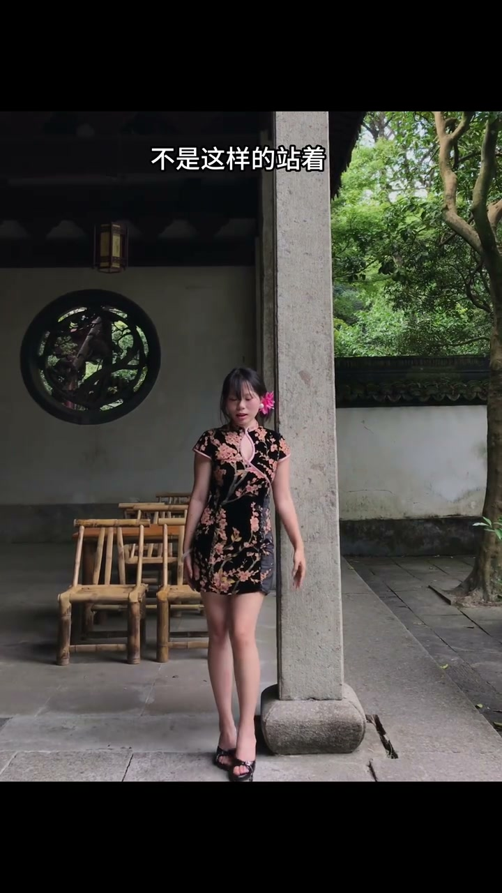
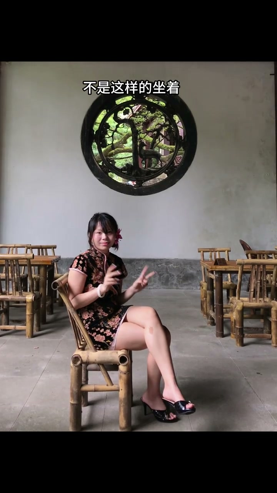
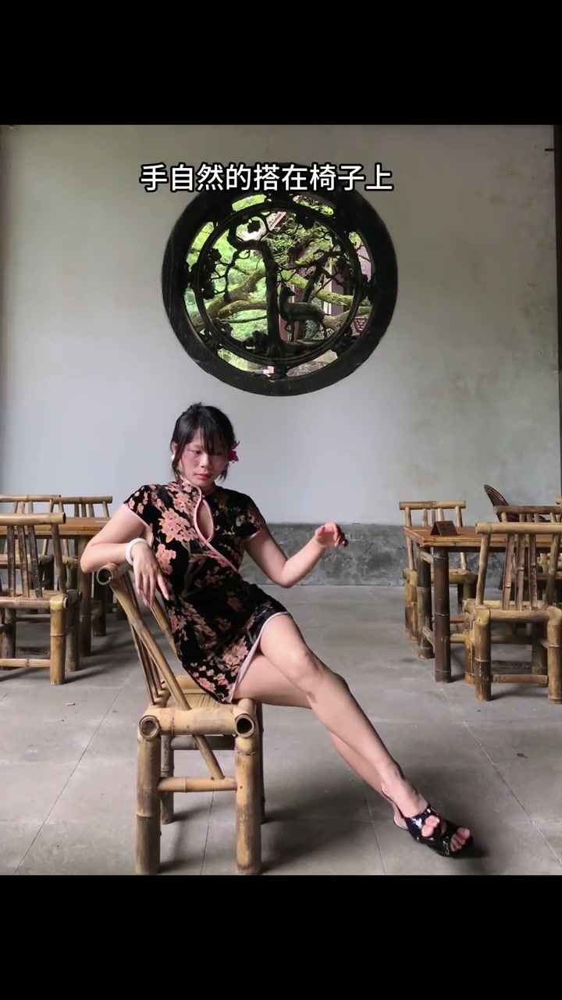
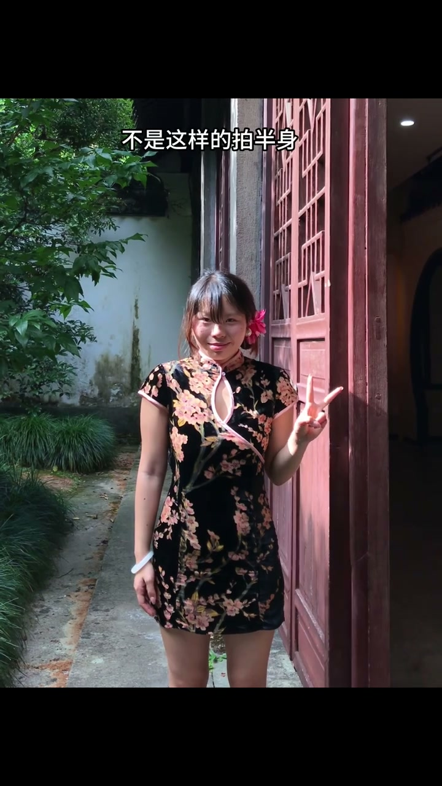
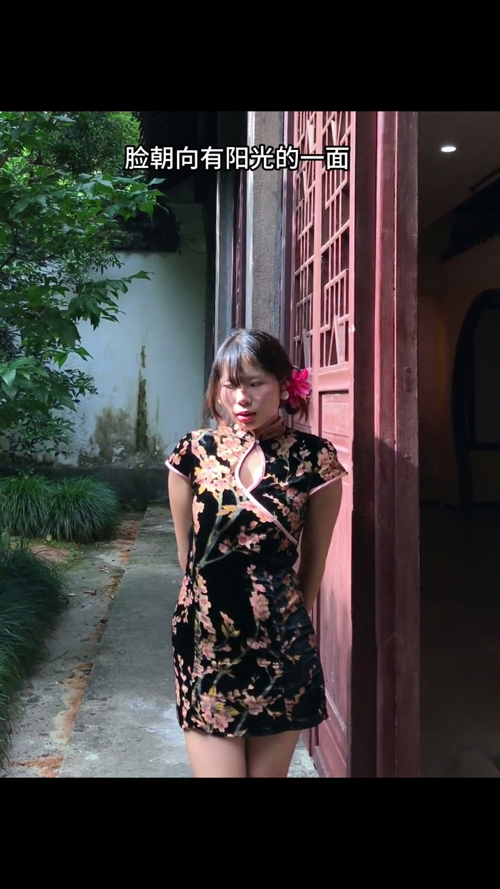

站着：交叉腿+摸耳+看侧面
00:00不是这样的站着——直挺挺站着，没内容。
00:01正确做法三件套：双腿交叉，一只手摸耳，往左看——身体有折线，手有落点，眼神有方向。

[00:01] 错：直挺挺站着
Wrong: standing ramrod straight
[00:03] 对：双腿交叉、一手摸耳、往左看
Right: legs crossed, one hand at the ear, looking left
坐着：侧放对角线、手搭椅背
00:06不是这样的坐着——正对镜头坐，横平竖直。
00:08正确做法：把身体侧过来放在镜头的对角线上，手自然地搭在椅子上——斜向构图显瘦，手有依靠更松弛。

[00:07] 错：正对镜头坐着
Wrong: sitting dead-on to the lens

[00:11] 对：身体侧放对角线、手自然搭椅
Right: body along the diagonal, hand resting naturally on the chair
半身：双手背后、脸迎光
00:14不是这样的拍半身——干站着，手空脸平。
00:15正确做法：双手放在后面，脸朝向有阳光的一面——手收身后人显窄，脸迎光皮肤好、氛围足。

[00:15] 错：干站着拍半身
Wrong: just standing there for a half-body shot

[00:18] 对：双手放后、脸朝向有阳光的一面
Right: hands behind, face turned to the sunlit side
最简单的拍照公式：手有落点，身体有角度，脸有光。